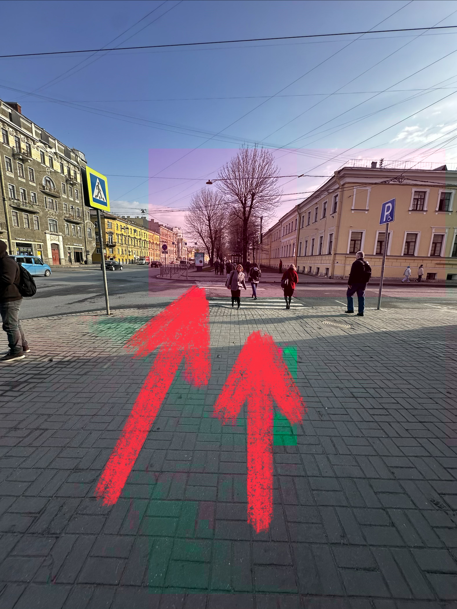
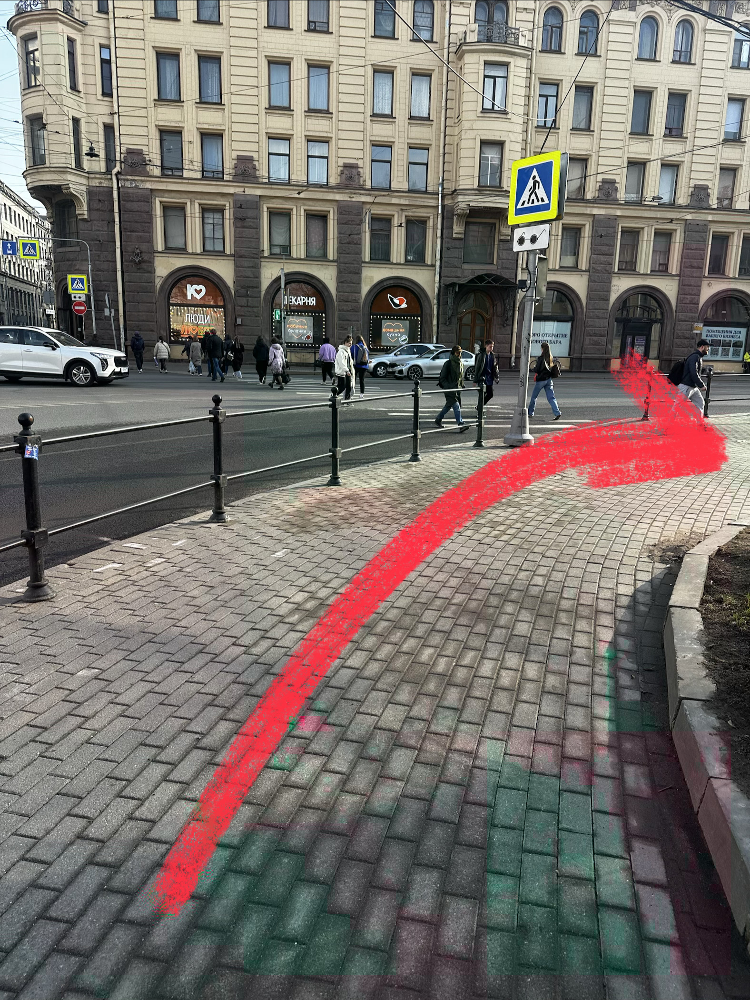
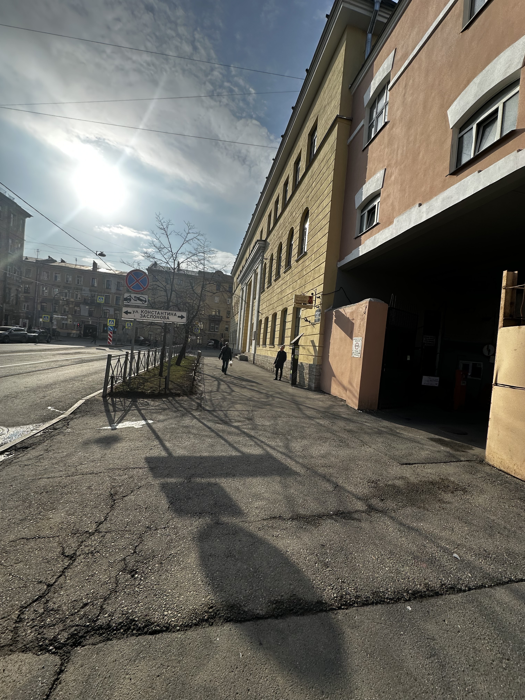
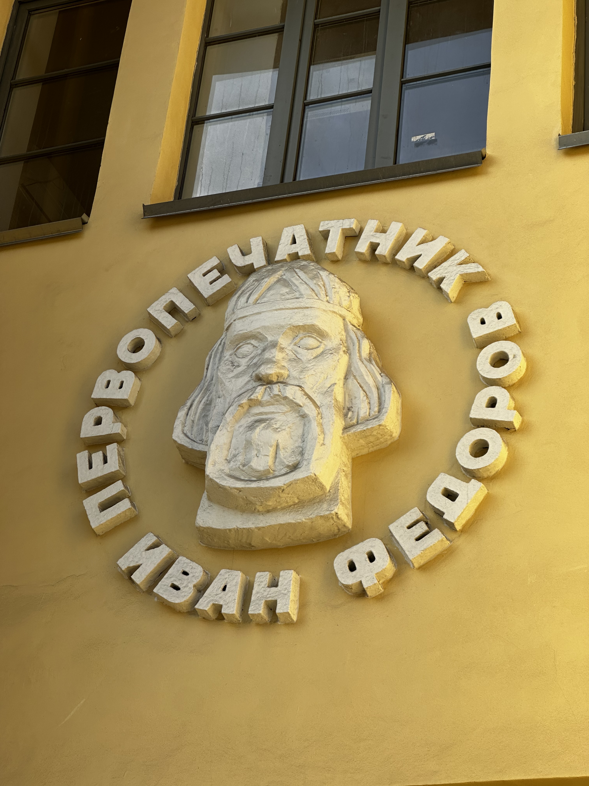
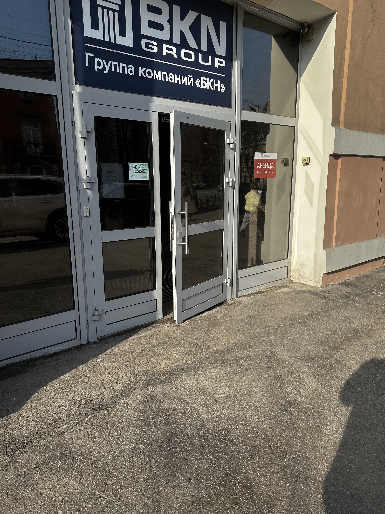

Адрес
ул. Звенигородская, д. 9-11, БЦ «Ивана Федорова»

Иди прямо до перекрестка.

Поворачивай налево и иди до упора, пока не дойдешь до желтого здания сбоку «Первопечатник Ивана Федорова».


Заходи внутрь и скажи охраннику: «Здравствуйте, нужен гостевой пропуск в «Перспектива», вот паспорт».
Выходи и поворачивай налево. Двигайся вперед, пока не увидишь стеклянную дверь «Группа компаний «БКН»».

🔑 Пропуск не теряй, он понадобится чтобы выйти.
Поднимайся на 4 этаж. Наша дверь находится с левой стороны.